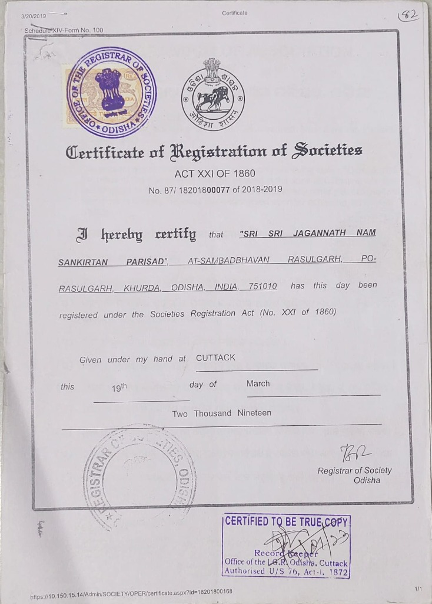

Certificate of Registration of Societies (Act XXI of 1860)
ID / Reg: 87/ 18201800077 of 2018-2019
Official legal registration certificate under Societies Registration Act (No. XXI of 1860) granted to Sri Sri Jagannath Nam Sankirtan Parisad at Sambadbhavan, Rasulgarh, Khurdha, Odisha, PIN - 751010.
Scanned Document